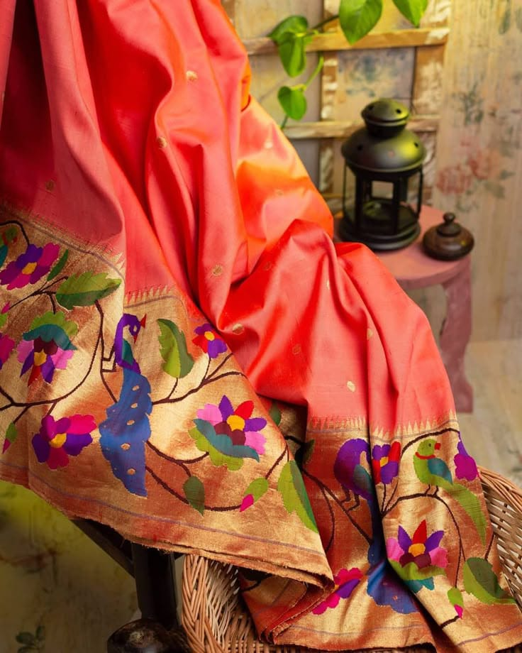
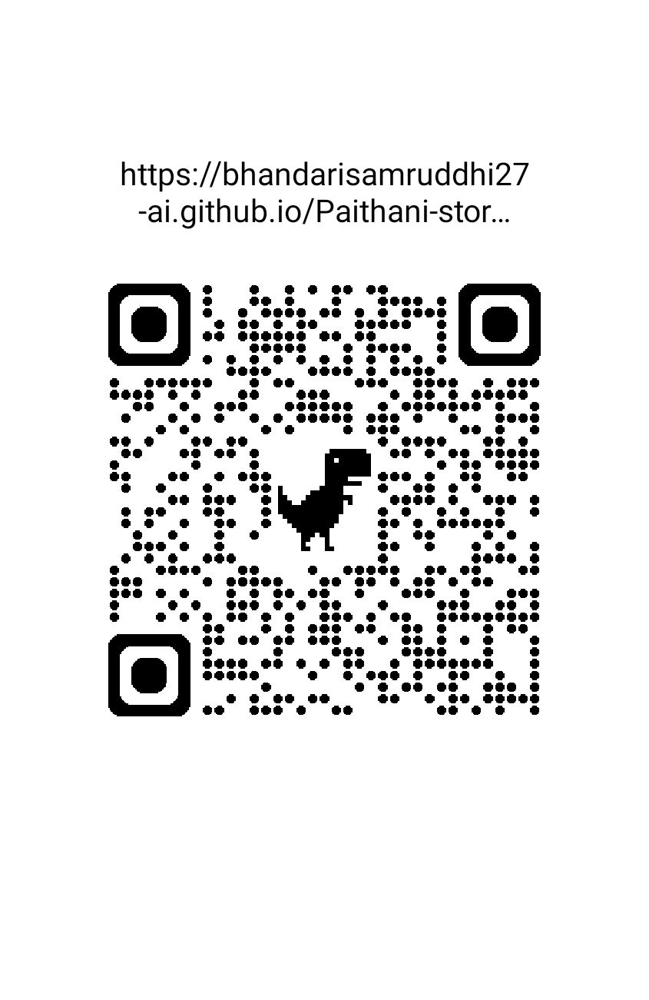

🌸 पैठणीची कथा
पैठणी ही केवळ एक सुंदर साडी नाही, तर महाराष्ट्राची समृद्ध संस्कृती, परंपरा आणि कलाकुसरीचे प्रतीक आहे.
प्रत्येक पैठणीमध्ये संयम, सर्जनशीलता आणि समर्पणाची एक कथा दडलेली असते. तिचे सुंदर रंग, पारंपरिक नक्षी आणि बारकाईने केलेले विणकाम तिला खास बनवते.
🧵 पैठणीमागचे हात
प्रत्येक सुंदर पैठणीमागे एका कारागिराचे कुशल हात, अनेक तासांची मेहनत आणि वर्षानुवर्षांची कला असते.
धाग्यांना सुंदर कलाकृतीमध्ये रूपांतरित करण्यासाठी कौशल्य, संयम आणि मेहनत आवश्यक असते. प्रत्येक नक्षी काळजीपूर्वक विणली जाते, जेणेकरून ही पारंपरिक कला पुढील पिढ्यांपर्यंत जिवंत राहील.
हा प्रकल्प त्या प्रत्येक कारागिराला समर्पित आहे, ज्यांच्या मेहनतीने, कौशल्याने आणि समर्पणाने पैठणीची परंपरा आजही जिवंत आहे.
🏛️ महाराष्ट्राचा सांस्कृतिक वारसा
पैठणी ही महाराष्ट्राच्या समृद्ध हातमाग परंपरेचा आणि सांस्कृतिक वारशाचा महत्त्वाचा भाग आहे.
तिची पारंपरिक नक्षी, आकर्षक रंग आणि सुंदर विणकाम महाराष्ट्राची ओळख आणि संस्कृती दर्शवतात.
❤️ ही फक्त साडी नाही, एक कथा आहे
पैठणी परिधान करताना आपण फक्त एक सुंदर साडी परिधान करत नाही, तर तिच्यामागची कला, मेहनत, संस्कृती आणि परंपराही सोबत घेऊन जातो.
📸 पैठणी छायाचित्र संग्रह
या पैठणीच्या सौंदर्याची आणि कलाकुसरीची एक झलक.


🎥 पैठणीचा प्रवास
पैठणीच्या कला, कारागिरी आणि परंपरेची झलक या व्हिडिओमधून अनुभवता येईल.
📱 QR Code द्वारे पैठणीची कथा
या QR Code ला स्कॅन करा आणि या पैठणीची कथा जाणून घ्या.


प्रत्येक पैठणीची स्वतःची एक ओळख आणि कथा असू शकते.
✨ पैठणी P001
उत्पादन क्रमांक: P001
स्थिती: Demo